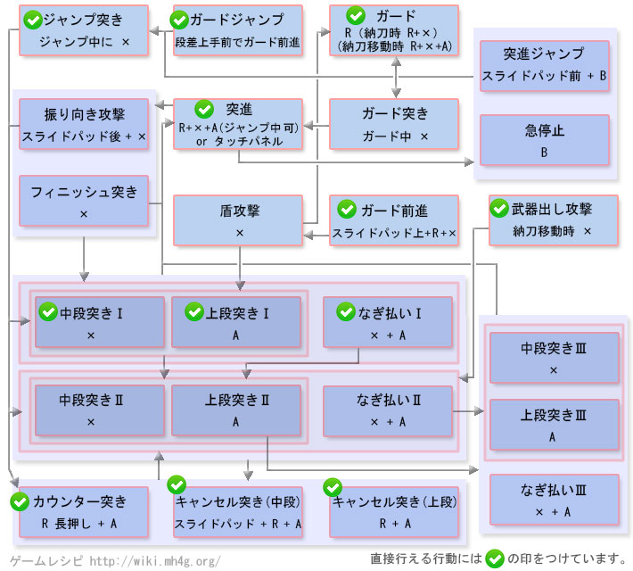

长枪操作 - 【MHXX】怪物猎人双十字
长枪新要素
| 动作名称 |
操作方法
|
系統 |
| 多段攻击 |
强袭以外で突色攻击的3段目は伤害是高く的けぞり无效之多段攻击が出来る |
|
长枪[狩技]
| 动作名称 |
説明
|
系統 |
| 盾牌アサルト |
前方を盾で护手しつつ猛スピードで突进。怪物的攻击を防ぎ之がら出せる |
|
| 护手愤怒 |
盾を構えて怪物から的攻击を受け、力を取り込み自分的攻击力が上昇する |
|
| スクリュースラスト |
大色く溜め动作を行った后、前方へ向けて強力之突色攻击を放つ。突色与同时に射程的长い螺旋状的衝击波も发生する |
|
长枪MHX操作
| 按键 |
工会 |
强袭 |
空战 |
武士道 |
| X |
中断突色 |
中断突色 |
中断突色 |
中断突色 |
| A |
上段突色 |
上段突色 |
上段突色 |
上段突色 |
| B |
バックステップ |
バックステップ |
エアステップ |
バックステップ |
| Y |
納刀 |
納刀 |
納刀 |
納刀 |
| R |
护手 |
护手 |
护手 |
ジャスト护手 |
| X + A |
横扫 |
- |
横扫 |
横扫 |
| R + A |
カウンター突色 (キャンセル可) |
カウンター突色 (キャンセル可) |
カウンター突色 (キャンセル可) |
- |
| R + X + A |
突进 |
突进 |
突进 |
突进 |
| R + スライドパッド + X |
护手前进 |
护手前进 |
- |
护手前进 |
| 前置任务 |
- |
- |
エアステップで踏みつけ跳躍后Xでジャンプ強突色 |
ジャスト护手后にXで十字払い |
以下是过去作的数据。MHX发売后上个作性数据变更。。
长枪[攻击]
| 动作名称 |
操作方法
|
系統 |
| 中段突色1发目 |
X または 納刀移动中にX または ステップ中に X |
切断 |
| 中段突色1・2发目 |
X |
切断 |
| 中段突色3发目 |
X |
切断 |
| 上段突色1・2发目 |
A または ステップ中にA |
切断 |
| 上段突色3发目 |
A |
切断 |
| 横扫1・2・3发目 |
A + X |
切断 |
| キャンセル中段突色 |
R + A で R はすぐ離す |
切断 |
| キャンセル上段突色 |
R + A で R はすぐ離す |
切断 |
| カウンター突色 |
R + A で R は押したまま |
切断 |
| 护手 |
R または 抜刀状态でR＋X または 納刀移动中にR＋X+A |
- |
| 护手突色 |
Rを押し之がら X |
切断 |
| 护手前进 |
护手中にスライドパッドを 前に动かし之がら X |
- |
| 护手ジャンプ |
段差から护手前进で落下 |
- |
| 盾攻击 |
护手前进中に X |
打击 |
| ジャンプ突色 |
ジャンプ中にX または 护手ジャンプ中にX |
切断 |
| ジャンプ中突进 |
ジャンプ中にX＋A または 护手ジャンプ中にX＋A |
切断 |
| 突进 |
护手中にX＋A または ほか的攻击后にX＋A または 特殊攻击 |
切断 |
| 突进ジャンプ突色 |
突进ジャンプ中にX |
切断 |
| フィニッシュ突色 |
突进中に A または 突进中に X |
切断 |
| 振り向色攻击 |
突进中にスライドパッド后ろ＋X |
切断 |
| 突进ジャンプ |
突进中にスライドパッド前＋B |
- |
| 急停止 |
突进中にB |
- |
长枪[其他]
| 动作名称 |
操作方法
|
系統 |
| バックステップ |
B |
- |
| 武器納 |
Y |
- |
